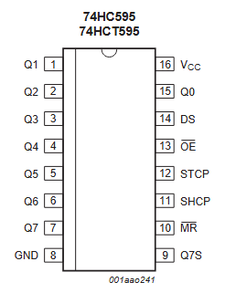

Met een 74HC595 stuur je acht uitgangen aan terwijl je maar drie pinnen van je Arduino gebruikt. Je schuift de bits er één voor één in, en zet ze daarna in één keer op de uitgang.

De vier ingangssignalen bepalen samen wat er met de data gebeurt:
Zolang je enkel op SHCP klokt, verandert er niets aan de uitgangen. Je bent dan achter de schermen aan het opbouwen wat er straks moet komen te staan. Pas bij een stijgende flank op STCP springt alles tegelijk zichtbaar op de uitgang, en daarom zie je geen tussenliggende rommel flikkeren.
In onderstaande interactieve simulatie kan je de werking van het 74HC595 schuifregister zelf uitproberen. Klik op de knoppen om een signaal om te schakelen, en kijk wat er in de drie registers gebeurt. Bij het opstarten is de inhoud van de registers nog onbekend, vandaar de X'en.
Bij het opstarten staat /OE op 1, en dus staan de uitgangen in tristate. Je ziet dan wel het schuifregister en het storage register vullen, maar de output stage blijft op X staan. Schakel /OE één keer om naar 0 en de uitgangen volgen het storage register.
Als je met de simulatie speelt, zie je de volgorde. De bit die je er als laatste inschuift, komt op Q0 terecht. Wil je dus een bepaald patroon op de uitgangen, dan begin je bij Q7 en eindig je bij Q0. Daarna geef je één stijgende flank op STCP om het hele patroon in één keer zichtbaar te maken.
Je stuurt SHCP en STCP aan met gewone digitale uitgangen. Omdat de 74HC595 enkel op een stijgende flank reageert en digitalWrite() alleen vaste toestanden kent, schrijf je daar zelf een functie voor:
void opgaandeFlank(int pinNummer)
{
digitalWrite(pinNummer, LOW);
digitalWrite(pinNummer, HIGH);
}shiftOut() hier niet gebruiktArduino heeft een ingebouwde functie shiftOut() die precies dit doet: acht bits na elkaar naar buiten klokken, in één regel. Zoek je online naar de 74HC595, dan is dat zowat het eerste wat je tegenkomt, en ook de Arduino-pagina over cascade gebruikt ze.
In dit labo schrijf je het toch zelf uit, en dat is met opzet. shiftOut() verbergt wat er bij elke flank gebeurt. Door per bit zelf DS te zetten en zelf op SHCP te klokken, zie je waarom de laatst ingeschoven bit op Q0 belandt. Dat inzicht heb je nodig zodra er iets niet werkt, of zodra je twee registers in cascade zet en moet uitzoeken welk cijfer waar terechtkomt.
Heb je het eenmaal met de hand gedaan, gebruik dan gerust de ingebouwde functie in je eigen projecten. Voor de oefeningen van dit labo houden we het bij de uitgeschreven versie.
De volledige datasheet van de 74HC595 kan je hier downloaden: 74HC595 / 74HCT595 (NXP, rev. 6). Drie hoofdstukken heb je in dit labo het vaakst nodig: